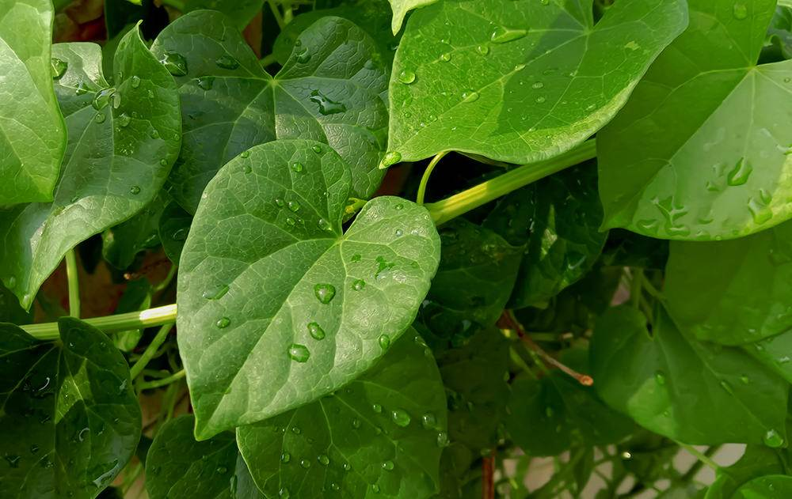

Basonym of Drug
Guduchi
Main Synonym
- Chakralakshanika
- Amrita
- Avyatha
- Chakrangi
- Amrutvalli
- Kundalini
- Tantrika
- Vishalya
- Somavalli
Regional Name
- Bengali: Giloe, Gulancha
- Gujarati: Galo, Gado
- Hindi: Giloy, Guduch
- Tamil: Amrida Valli, Silam
- Telugu: Tippa Teega
- Malayalam: Sittamrytu
- Marathi: Ambarvel, Gulavela
Botanical Name
Tinospora cordifolia
Family
Menispermiaceae
Classification (Gana)
- Aacharya Charaka: Vayasthapana, Dahaprashamana, Trishna Nigrahana, Triptighna, Stanyasodhana
- Aacharya Sushruta: Guduchyadi, Patoladi, Vallipanchmoola, Kakolyadi, Aragvadhadi
- Aacharya Vagbhatta: Guduchyadi, Patoladi, Aragvadhadi
External Morphology
A large climber
Useful Parts
Important Phytoconstituent
Kokusaginine, Malabarolide, Tinosporide, Cordifolide, Beta-sitosterol
Rasa Panchak
- Rasa: Kashaya, Tikta
- Guna: Guru, Snigdha
- Virya: Ushna
- Vipaka: Madhura
Action
Tridoshahara
Therapeutic Indication
- Deepan (Increase appetite)
- Grahi (Decreases over-secretion)
- Pachan (Digestive)
- Medhya (Increases cognitive strength)
- Jwarahara (Anti-pyretic)
- Kandughna (Useful in itching)
Therapeutic Uses
- Jwara - Guduchi Satva with water is useful in fever.
- Prameha - Decoction of Guduchi stem is beneficial with honey.
- Vatrakta - Guduchi powder or juice with licorice root is beneficial in gout.
- Rasayana - Guduchi fresh juice in the morning is beneficial as rejuvenation.
Dose
- Stem Powder - 4-6 gm
- Fresh Juice - 5-10 ml
- Decoction - 50-100 ml
Formulations
- Guduchyadi Kwath
- Balaguduchyadi Taila
- Amritarista
- Amritadi Guggulu
- Panchtikta Guggulu
Adverse Effect
Not Known